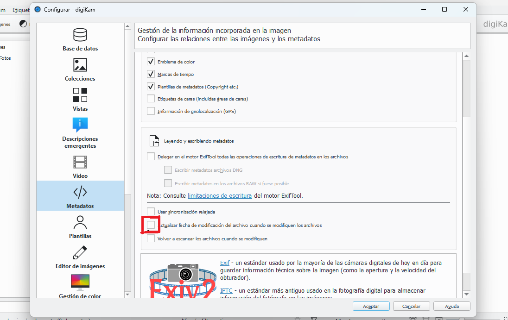
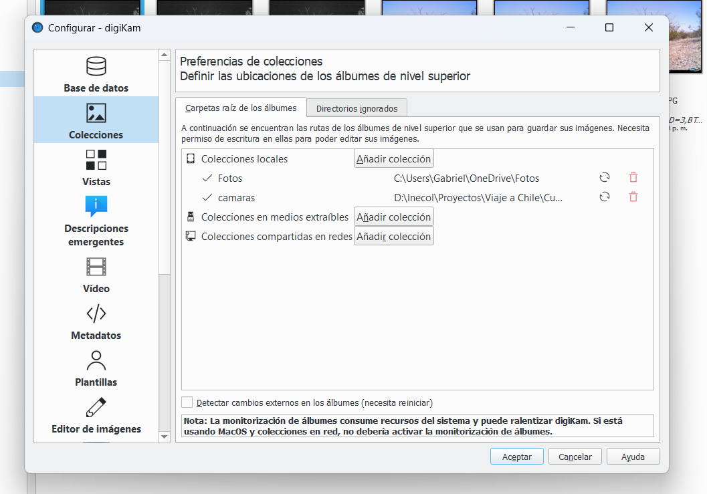
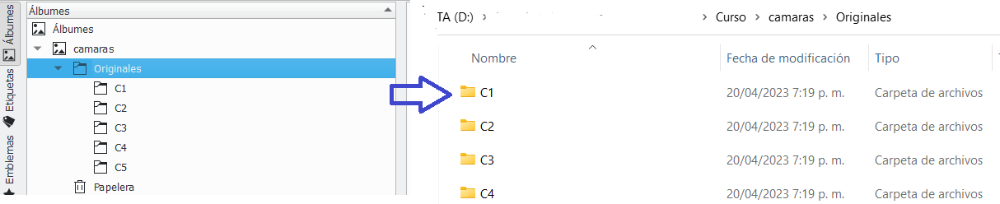
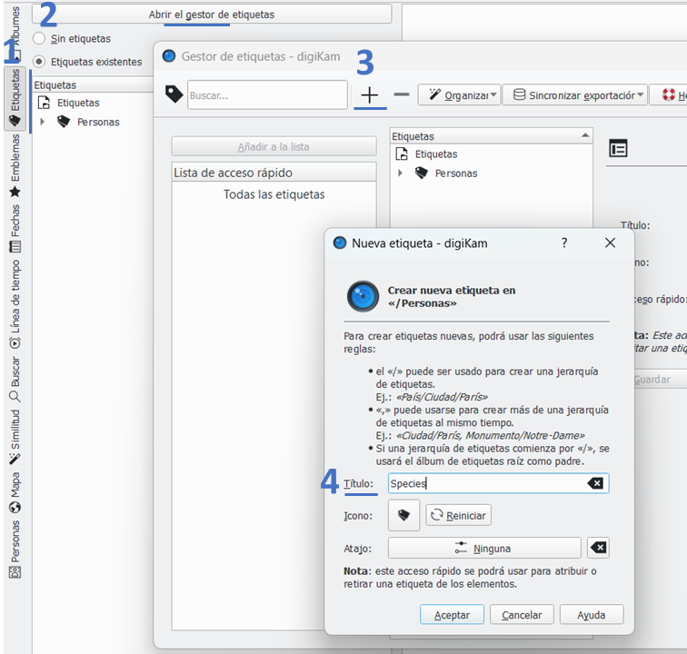
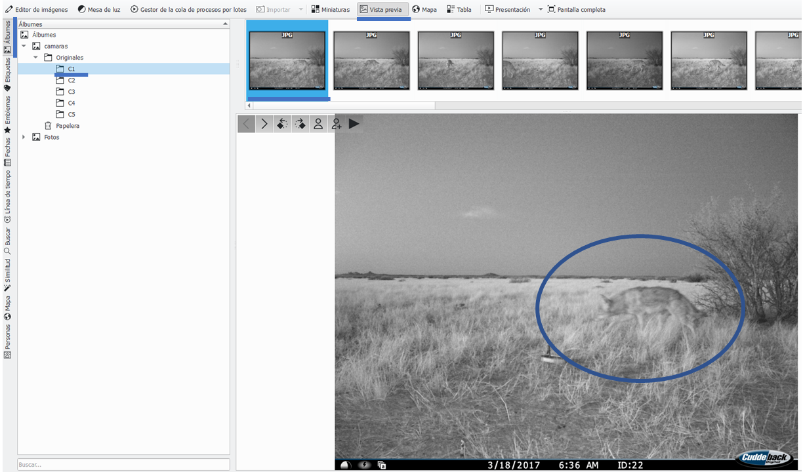
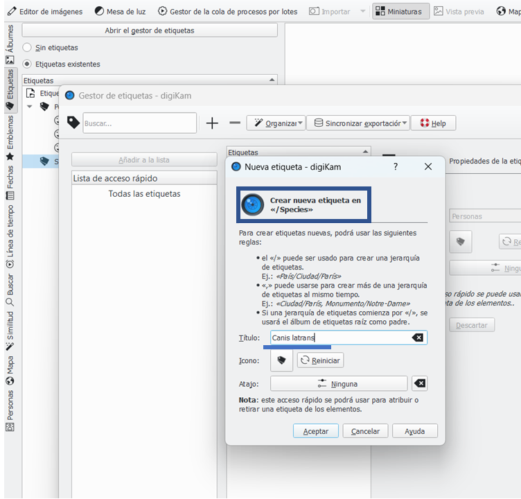
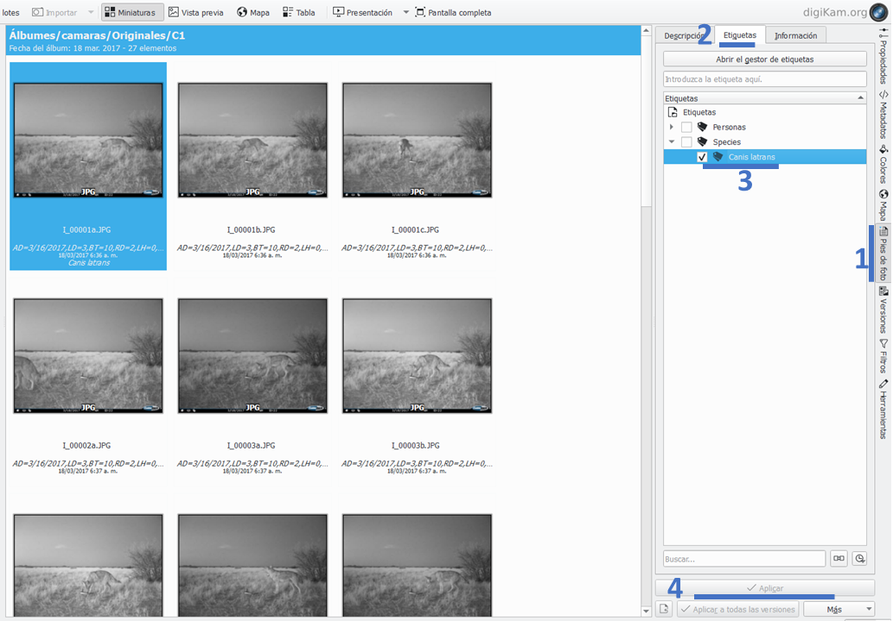
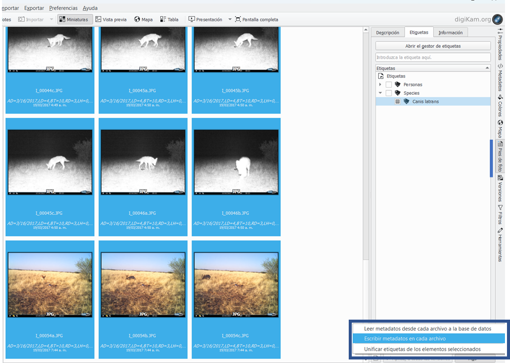

Configurar y usar DigiKam
Pasos para configurar DigiKam
Una vez instalado DigiKam tenemos que configurarlo y generar la carpeta donde se guardaran los archivos SQL que contendrán toda la información de meta-datos.
Si es la primera vez que abres DigiKam se abrirá una ventana de bienvenida, en la cual le das siguiente
Configurar carpeta de imágenes: Seleccionar la carpeta donde están guardadas tus imágenes. Lo importante de este punto es que sea una carpeta local. Mucho cuidado con escoger una carpeta en un disco extraible o usb. Por ahora la mejor opción es ubicar el directorio en donde están nuestras imágenes a trabajar
Configurar carpeta de bases de datos: Ahora te pide saber en que carpeta guardara el SQL. Este paso es muy importante porque si pierden estos archivos DigiKam no funcionará. Porfavor, no uses una carpeta de una usb o disco extraible
Configurar archivos raw: Esta opción la dejamos por defecto y continuamos
Configurar almacenamiento de meta-datos: En este punto le damos que si queremos añadir la información a los archivos. Esto hace que guarde los metadatos cuando lo indiquemos y son precisamente los que se usarán en CamtrapR
Todos los demás pasos los dejaremos por defecto y pondremos siguiente hasta que lleguemos a finalizar.
Ya una vez iniciado Digikam iremos a la pestaña de preferencias y configuración de DigiKam. Se desplegara una ventana y en la sección izquierda unos iconos. Por ahora nos centraremos en meta-datos. En la parte inferior quitaremos la opción de actualizar fecha de modificación del archivo cuando se modifique. Ésto es importante porque necesitamos la fecha original del archivo ya que es la fecha de registro de la foto

Agregar colecciones
Paso previo: limpiar fotos
Debido a que una gran cantidad de fotos puede llegar a saturar DigiKam en computadores con bajo poder de procesador. Es recomendable primero realizar la limpieza de las fotos, es decir eliminar las fotos sin registros. De esta forma solo se ingresan a DigiKam la fotos de interés o donde hay registros.
Si en la sección anterior en el paso 2 agregaste la carpeta o colección donde están tus cámaras trampa deben aparecer ya tus carpetas. Si no, simplemente ve de nuevo a la pestaña de preferencias a colecciones y agrega la carpeta donde están las carpetas de tus cámaras. Nota que en esta sección si puedes agregar colecciones en medios extraviarles usando la opción para ello.

Si todo sale bien en la parte izquierda de DigiKam en la pestaña de Álbumes aparecerá la carpeta, con las subcapetas de cada estación. La organización es importante para el posterior análisis en R: Necesitas seleccionar la carpeta que será tu álbum y dentro tendrás una carpeta por cada estación de muestreo que contendrá sus respectivas fotos

Etiquetar fotos
Ya tenemos nuestras fotos en DigiKam, ahora vamos a empezar a identificar y etiquetar los registros que tenemos en cada estación.
- Lo primero que haremos es generar la etiqueta de especie. Para ello iremos a la parte izquierda de la ventana de DigiKam y daremos clic en la pestaña de 1) Etiquetas, 2) Abrir gestor de etiquetas, 3) “+” para agregar una nueva etiqueta, 4) la llamaremos etiqueta de Species

Ya tenemos nuestra primera etiqueta, ahora vamos a ver que especies tenemos en las fotos. Voy a seleccionar la carpeta C1 y voy a ver la vista previa de la primera fotografía.

Es un coyote lo que vemos en esa foto 🐺 y su nombre científico es Canis latrans. Pues bien, vamos a crear la etiqueta para esta especie. Regresaremos a la pestaña de etiquetas y luego a gestionar etiquetas. En este punto es importante que antes de crear la etiqueta, seleccionemos la etiqueta de Species previamente generada. Esto es importante porque las etiquetas son jerárquicas, es decir que la etiqueta que vamos a crear se va a ubicar dentro de la etiqueta de Species.

- Para aplicar la etiqueta regresaremos a los Álbumes y a la vista previa de la imagen del coyote. Una vez seleccionada la imagen 1) dirígete a la parte derecha de la ventana de DigiKam a la pestaña que dice Pies de foto, 2) En la ventana que se despliega dirigete a la pestaña de etiquetas, 3) verás que están las etiquetas disponibles y en este caso seleccionaremos a Canis latrans. 4) Finalmente le damos en aplicar. Puedes ver que al hacerlo ahora aparece debajo de la imagen la etiqueta de Canis latrans.

Muy bien. Ahora tenemos que repetir el proceso para cada una de las fotos. Estas son las especies:
Coyote = Canis latrans
Liebre de California = Lepus californicus
Lince rojo = Lynx rufus
Zopilote o buitre aura = Cathartes aura
Importante
Una vez termines de etiquetar las fotografías de cada cámara, debes seleccionar las todas las fotos de la carpeta. Ésto puedes hacerlo con shift + seleccionar todas las fotos o con Ctrl + A. Luego de seleccionar todas las fotos de la carpeta te vas a la pestaña de pie de fotos y en la parte inferior, justo debajo del botón de “aplicar”, hay un botón de “Más”. Dale clic a este botón y luego seleccionas escribir metadatos en cada archivo. Si no completas este paso, los metadatos no se escribirán en las fotos originales y por lo tanto no funcionará camtrapR.

Otras etiquetas
Es posible generar diferentes etiquetas dependiendo de los objetivos e intereses del estudio. Por ejemplo, puedes asignar etiquetas para individuos identificados, sexo o comportamientos. Lo importante aquí es que deben ser etiquetas independientes, o con una jerarquía diferente de la de especie.